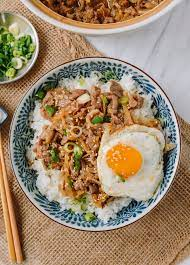

Gyoudon recipe

Description
Gyudon is a Japanese beef bowl consisting of thinly sliced fatty beef and onions in a lightly sweet mixture of mirin and soy sauce.
Ingredients
- Thinly sliced beef
- Onion
- Sauce
- Garnish
Steps
- Cut the onion, green onions, and beef.
- Put the sauce ingredients, sliced onions, and beef in a large frying pan and start cooking.
- Serve the simmered beef and onion over steamed rice in large bowls.